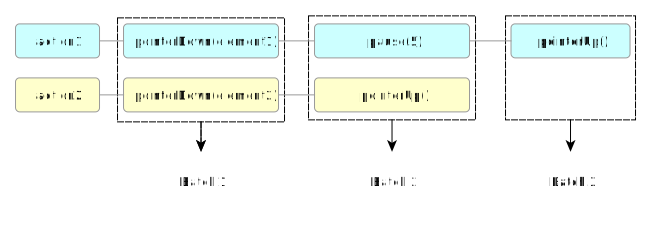

This specification defines the WebDriver API,
a platform and language-neutral interface and associated wire protocol
that allows programs or scripts to introspect into,
and control the behaviour of, a web browser.
The WebDriver API is primarily intended to allow developers to write tests
that automate a browser from a separate controlling process,
but may also be implemented in such a way as to allow in-browser scripts to control a —
possibly separate — browser.
The WebDriver API is defined by a wire protocol
and a set of interfaces to discover and manipulate DOM elements on a page,
and to control the behaviour of the containing browser.
This specification also includes a normative reference serialisation (to JSON over HTTP)
of the interface's invocations and responses that are to be used
by browser vendors to ensure interoperability.
If you wish to make comments regarding this document,
please email feedback to public-browser-tools-testing@w3.org.
All feedback is welcome, and the editors will read and consider all feedback.
This specification is intended for implementors of the WebDriver API.
It is not intended as light bed time reading.
This specification is still under active development and may not be stable.
Any implementors who are not actively participating in the preparation of this specification
may find unexpected changes occurring.
It is suggested that any implementors join the WG for this specification.
Despite not being stable,
it should be noted that this specification is strongly based on an existing open source project —
Selenium WebDriver —
and the existing implementations of the API defined within that project.
Conformance
All diagrams, examples, and notes in this specification are non-normative,
as are all sections explicitly marked non-normative.
Everything else in this specification is normative.
The key words “MUST”, “MUST NOT”, “REQUIRED”, “SHOULD”,
“SHOULD NOT”, “RECOMMENDED”, “MAY”, and “OPTIONAL”
in the normative parts of this document are to be interpreted as described in [[!RFC2119]].
The key word "OPTIONALLY" in the normative parts of this document
is to be interpreted with the same normative meaning as “MAY” and “OPTIONAL”.
Conformance requirements phrased as algorithms
or specific steps may be implemented in any manner,
so long as the end result is equivalent.
Terminology
The terminology most used in this specification is from
HTML, DOM, and CSS. [[!HTML]] [[!DOM4]] [[!CSS21]]
In equations, all numbers are integers,
addition is represtend by “+”,
subtraction is represented by “−”,
and bitwise OR by “|”.
The characters “(” and “)” are used to provide logical grouping in these contexts.
This specification defines three broad conformance classes:
Local End
This represents the client side of the protocol,
which is usually in the form of language-specific libraries
providing an API on top of the WebDriver protocol.
This specification does not place any restrictions on the details of those libraries
above the level of the wire protocol.
Remote End
This is the server side of the protocol,
which is usually implemented by a web browser or similar user agent.
Defining the behaviour of the remote end in response to the WebDriver protocol
forms the largest part of this specification.
Intermediary Node
Intermediary nodes are those that act as proxies,
implementing both the client and server sides of the protocol.
Intermediary nodes must be black-box indistinguishable from a remote end
from the point of view of local end
and so are bound by the requirements on a remote end in terms of the wire protocol.
However they are not expected to implement commands directly.
When getting a property from a JSON Object, the steps in [[!ECMA-262]]
GetProperty
need to be followed.
The WebDriver Protocol
Introduction
TODO
Algorithms
Various parts of this specification are written in terms of step-by-step algorithms. The details of these algorithms do not have any normative significance; implementations are free to adopt any implementation strategy that produces equivalent output to the specification. In particular algorithms in this document are optimised for readability rather than performance.
Where algorithms that return values are fallible, they are written in terms of returning either success or error. A success value has an associated data field which encapsulates the value returned, whereas an error response has an associated error code.
Commands
The WebDriver protocol is organised into commands. Each HTTP request with a method and template defined in this specification represents a single command and therefore each command produces a single HTTP response. In response to a command, a remote end will run a series of actions against the remote browser.
Each command defined in this specification has an associated list of remote end steps. This provides the sequence of actions that a remote end takes when it recieves a particular command.
Processing Model
The remote end acts as a HTTP server reading requests from the client and writing responses, typically over TCP socket. For the purposes of this specification we model the data transmission between a particular local end and remote end with a connection to which the remote end may write bytes and read bytes. However the exact details of how this connection works and how it is established are out of scope.
After such a connection has been established, a remote end MUST run the following steps:
Read bytes from the connection until a complete HTTP request can be constructed from the data. Let request be a request object constructed from the received data, according to the requirements of [[!RFC7230]].
Let request match be the result of the algorithm to match a request with request's method and url as arguments.
Request routing is the process of going from a HTTP request to the series of steps needed to implement the command represented by that request.
A remote end has an associated URL prefix, which is used as a prefix on all WebDriver-defined URLs on that remote end. This must either be the empty string, or an absolute path relative url.
In order to match a request given a method and url, the following steps must be taken:
Remove each entry in endpoints for which the concatenation of the url prefix and the production in the "url" column does not match url according to the rules in [[!URI-Template]].
If there are no entries in endpoints, return an error with code unknown command.
Remove each entry in endpoints for which the "method" column is not an exact case-sensitive match for method.
If there are no entries in endpoints, return an error with code unknown method.
There is now exactly one entry in endpoints; let entry be this entry.
If the match in step 2 populated a template variable called "sessionId", let session id be the value it was populated with. Otherwise let session id be null.
If the match in step 2 populated a template variable called "elementId", let element id be the value it was populated with. Otherwise let element id be null.
If the match in step 2 populated a
template variable called "name", let name be the value it was populated with. Otherwise let name be null.
Let command be the command represented by the "command" column of entry.
Return success with data session id, element id and command.
List of Endpoints
The following table of endpoints lists the method,
URL, and command for each WebDriver command.
Errors are represented in the WebDriver protocol with a HTTP response with a HTTP status in the 4xx or 5xx range and a JSON body containing details of the error. This JSON body has two fields; error, containing a string indicating the error type and error containing an implementation-defined string containing a human readable description of the kind of error that occured.
The following table lists each error code, its associated HTTP status, JSON status value, and gives a non-normative description of the error. The error response data for a particular error code is the values of the HTTP Status and JSON Status columns for the row corresponding to that error code.
Error Code
HTTP Status
JSON Status
Description
element not selectable
400
element not selectable
An attempt was made to select an element that cannot be selected.
element not visible
400
element not visible
An element command could not be completed because the element is not visible on the page.
invalid argument
400
invalid argument
The arguments passed to a command are either invalid or malformed.
invalid cookie domain
400
invalid cookie domain
An illegal attempt was made to set a cookie under a different domain than the current page.
invalid element coordinates
400
invalid element coordinates
The coordinates provided to an interactions operation are invalid.
invalid element state
400
invalid element state
An element command could not be completed
because the element is in an invalid state
(e.g. attempting to click an element that is no longer attached
to the Document).
invalid selector
400
invalid selector
Argument was an invalid selector.
invalid session id
404
invalid session id
The session with the session ID does not exist.
This could be either from the session being quit
or the session ID passed in is not currently active.
javascript error
500
javascript error
An error occurred while executing JavaScript supplied by the user.
move target out of bounds
500
move target out of bounds
The target for mouse interaction is not in the browser's viewport and cannot be brought into that viewport.
no such alert
400
no such alert
An attempt was made to operate on a modal dialog when one was not open.
no such element
404
no such element
An element could not be located on the page using the given search parameters.
no such frame
400
no such frame
A request to switch to a frame could not be satisfied because the frame could not be found.
no such window
400
no such window
A request to switch to a different window could not be satisfied because the window could not be found.
script timeout
408
script timeout
A script did not complete before its timeout expired.
session not created
500
session not created
A new session could not be created.
stale element reference
400
stale element reference
An element command failed because the referenced element
is no longer attached to the
Document.
timeout
408
timeout
An operation did not complete before its timeout expired.
unable to set cookie
500
unable to set cookie
A request to set a cookie's value could not be satisfied.
unexpected alert open
500
unexpected alert open
A modal dialog was open, blocking this operation.
unknown command
404
unknown command
A command could not be executed because the remote end is not aware of it.
unknown error
500
unknown error
An unknown error occurred in the remote end while processing the command.
unknown method
405
unknown method
The requested command matched a known URL but did not match an method for that URL.
unsupported operation
500
unsupported operation
Indicates that a command that should have executed properly cannot be supported for some reason.
Capabilities
WebDriver capabilities allow the local end
to specify what features it requires the remote end to fulfil
to be able to create a new session.
Processing Capabilities
When processing capabilities with argument parameters a
remote end must run the following steps:
Let server capabilities be a JSON Object
with the following entries:
Be true if it can capture a screenshot of the viewport
described in Take Screenshot.
"takesElementScreenshot"
Be true if it can capture a screenshot of an element
as described in Take Screenshot.
let required capabilities be the result of getting a property
name requiredCapabilities from capabilities. If required
capabilities is not a JSON Object set the value to an empty JSON Object.
let desired capabilities be the result of getting a property
name desiredCapabilities from capabilities. If desired
capabilities is not a JSON Object set the value to an empty JSON Object.
Let length be the length of required capabilities
if required capabilities is defined else let it be 0.
Let k be 0.
While k < length:
Let capability be the value in required capabilities at index k.
If the name of the capability entry is in desired capabilities
remove the entry from desired capabilities.
Increase k by 1.
Let unmet capabilities be equal to an empty JSON List.
Let unprocessed capabilities be a JSON List that contains required
capabilities if defined and desired capabilities if defined.
Let j be 0.
Let capabilties length be the length of unprocessed capabilities.
While j < capabilities length:
Let unprocessed capability be the entry at index j in
unprocessed capabilities.
If during the steps below the unprocessed capability property equals a property on required
capabilities and equals a server capabilities property and the values do not match do the following:
Append a string containing the property name and the differences between the values.
Let browser name be the result of getting a property
named browserName from unprocessed capability. If browser name
is undefined move to the next step.
Let browser version be the result of getting a property
named browserVersion from unprocessed capability. If browser name
is undefined move to the next step.
Let platform name be the result of getting a property
named platformName from unprocessed capability. If platform name
is undefined move to the next step.
Let platform version be the result of getting a property
named platformVersion from unprocessed capability. If platform version
is undefined move to the next step.
Let proxy be the result of getting a property
named proxy from unprocessed capability. If proxy
is undefined move to the next step. If proxy is defined and not a map
append a string saying that a map is required else call setup proxy
passing in proxy.
Let page load strategy be the result of getting a property
named pageLoadStrategy from unprocessed capability. If page load strategy
is undefined then set the entry pageLoadStrategy in server capabilities to normal.
If the length of unmet capabilities is not equal to 0 return
session not created with data unmet capabilities.
Return server capabilities.
Sessions
A session is equivalent to a single instantiation of a particular user agent,
including all its child browsers.
WebDriver gives each session a unique session ID
that can be used to differentiate one session from another,
allowing multiple user agents to be controlled from a single HTTP server,
and allowing sessions to be routed via a multiplexer
(known as an intermediary node).
A WebDriver session represents
the connection between a local end and a specific remote end.
A remote end that is not an intermediary node
must have at most one active session at a given time.
The session is set up at the invocation of
a new session,
and torn down at some later point;
either explicitly by invoking quit,
or implicitly when close is called at the last remaining
top-level browsing context.
A remote end has an associated list of active sessions,
which is a list of all sessions that are currently started.
Requests, except New Session requests, have an
associated current session, which is the session in
which that request's command will run.
A remote end has an associated
maximum active sessions (an integer)
that defines the number of open sessions
that are supported.
This may be "unlimited" for intermediary nodes,
but must be exactly one for a final remote end.
A session has an associated session ID
(a UUID) used to uniquely identify this session. Unless
stated otherwise it is null.
A session has an associated current browsing context,
which is the browsing context
against which commands will run.
The top-level browsing context is said to be no longer open
if it has been discarded.
Each top-level browsing context has an associated window handle, which is a string uniquely identifying that browsing context. This string is implementation defined but must not be "current".
A session has an associated session script timeout
that specifies a time to wait for scripts to run.
Unless stated otherwise it is 30,000 milliseconds.
A session has an associated session page load timeout
that specifies a time to wait for the page loading to complete.
Unless stated otherwise it is 300,000 milliseconds.
Close any top-level browsing contexts associated with the session, without promping to unload
.
Perform any implementation-specific cleanup steps.
For example, a closing the session might cause the
associated browser process to be killed
.
A session is started when new
session is invoked. It is an error to send any commands before
starting a session, or to continue to send commands after the session
has been. Maintaining session continuity between requests to
the remote end requires passing a session ID.
If the node is an intermediate node, take implementation-defined steps that either result
in returning an error with status code session not created or in returning a
success with data that is isomorphic to that returned by remote ends
according to the rest of this algorithm.
This allows intermediary nodes to use the capabilities data in any way they
want e.g. to select a specific browser to test based on a combination of the required and
desired capabilities. Typically the new session response from the remote end selected in
this process will then be relayed directly to the client
The commands in this section allow navigation of the current
top-level browsing context to new URLs and introspection of the
document currently loaded in this browsing context.
For commands that cause a new document to load, the point at
which the command returns is determined by the session's page
load strategy. A value of normal causes the command
to return after the load event fires on the new page, a
value of eager causes it to return
after DOMContentLoaded fires, and a value
of none causes it to return immediately.
Navigation actions are also affected by the value of
the session page load timeout, which determines the maximum
time that commands will block before returning with a timeout
error.
Get
HTTP Method
Path Template
Notes
POST
/session/{sessionId}/url
The Get command is used
to cause the user agent to navigate
the current top-level browsing context a new location.
From a user’s point of view,
it is as if they have entered a URL into the address bar
of the browser’s chrome.
Navigate the current top-level browsing context's to url.
If this navigation results in a HTTP 401 response,
the remote end must proceed with the steps below,
irrespective of how the authentication challenge is handled.
If the previous step completed by the load timeout being reached,
and the browser is not currently displaying an alert,
return an error with code timeout.
Otherwise, wait until
the current
entry in the session history has changed, or for
the session page load timeout milliseconds to pass,
whichever occurs sooner.
If the previous step completed by the session page
load timeout being reached, and the browser is not
currently displaying an alert, return
an error with code timeout.
Otherwise, wait until
the current
entry in the session history has changed, or for
the session page load timeout milliseconds to pass,
whichever occurs sooner.
If the previous step completed by the session page
load timeout being reached, and the browser is not
currently displaying an alert, return
an error with code timeout.
WebDriver implementations MUST support users accessing sites served via HTTPS. Access to those sites using self-signed or invalid certificates, and where the certificate does not match the serving domain MUST be the same as if the HTTPS was configured properly.
The reason for this is that implementations of this spec are often used for testing. It's a sorry fact that many QA engineers and testers are asked to verify that apps work on sites that have insecure HTTPS configurations
The exception to requirement is if the Capabilities used to initialize has the WebDriver session had the capability secureSsl set to true. In this case, implementations MAY choose to make accessing a site with bad HTTPS configurations cause a WebDriverException to be thrown. Remote end implementations MUST return an unknown error status in this case. If this is the case, the Capabilities describing the session MUST also set the secureSsl capability to "true".
Controlling Windows
WebDriver's use of the term “window” is equivalent to
a top-level browsing context.
No distinction is made between
windows or applications on the operating system level
and user agent tabs.
This must not be confused with
the Window object
in [[!html51]].
In order to determine whether or not a particular interaction with the browser opens a new window one can obtain the set of window handle before the interaction is performed and compare it with the set after the action is performed.
Switch To Window
HTTP Method
Path Template
Notes
POST
/session/{sessionId}/window
The Switch To Window command is used
to select the current top-level browsing context
for the current session,
i.e. the one that will be used for processing commands.
WebDriver provides commands for interacting with the
operating system window containing the current browsing
context. Because different operating systems, window managers
provide different abilities, not all of the commands in this
section can be supported by all remote ends. Where a command is
not supported, an unsupported operation error is
returned.
Resizes the OS window currently receiving commands to have the height and width passed in as parameters.
If a request is made to resize a OS window to a size which cannot be performed (e.g. the browser has a minimum, or fixed OS window size, or the operating system does not support resizing windows at all as is the case in many phone OSs), an unsupported operation status code MUST be returned.
After setWindowSize, the browser window MUST NOT be in the maximised state.
unsigned double width
The "width" value refer to the javascript window.outerwidth property. If the User Agent does not support this property, it represents the width of the whole OS window including window chrome and window resizing borders/handles.
unsigned double height
The "height" value refer to the javascript window.outerheight property. If the User Agent does not support this property, it represents the width of the whole OS window including window chrome and window resizing borders/handles.
Maximize Window
HTTP Method
Path Template
Notes
POST
/session/{sessionId}/window/maximize
The Maximize Window command invokes the window
manager-specific "maximize" operation, if any, on the window
containing the current top-level browsing context. This
typically increases the window to the maximum available size
without going full-screen.
Run the implementation-specific steps to complete the
Maximize command,
which should have the effect of maximizing the dimensions of
the window containing the current active top-level
browsing context without making the window full-screen, if the
window manager distinguishes between maximized and
full-screen windows.
The Fullscreen Window command invokes the window
manager-specific "full screen" operation, if any, on the window
containing the current top-level browsing context. This
typically increases the window to the size of the physical
display and can hide browser UI elements such as toolbars.
Run the implementation-specific Fullscreen
Window steps, which should have the effect of making the
dimensions of the window containing the current top-level
browsing context as close as possible to the dimensions
of the display containing the window dimensions, and may
hide browser-provided chrome such as toolbars.
The "switchToFrame" command is used to select which frame which is a child of thetop level browsing context MUST be used as the context for handling future commands. All frame switching is taken from the current context from which commands are currently being handled. The "id" parameter can be an unsigned short or a WebElement. WebDriver implementations MUST determine which frame to select using the following algorithm:
If the "id" is a unsigned short the current context is set to the equivalent of the JS expression "window.frames[id]" where "id" is the number and "window" is the Document window represented by the current context.
If the "id" is null, the current context is set to the default content.
If the "id" represents a WebElement, and the corresponding Document element represents a FRAME or an IFRAME, and the WebElement is part of the current context, the "window" property of that Document element becomes the current context.
In all cases if no match is made a "no such frame" status code MUST be returned.
If the indicated frame exists, frame switching MUST succeed even if doing so would violate the normal security constraints in place within the Javascript sandbox.
switchToParentFrame()
HTTP Method
Path Template
Notes
POST
/session/{sessionId}/frame/parent
The "switchToParentFrame" command MUST set the context of future commands to the window.parent. If the current context is the [[!html51]]'s top level browsing context, the context remains unchanged.
Running Without Window Focus
All browsers must comply with the focus section of
the [[!html51]] spec. In particular, the requirement that the active element within a top-level browsing
context be independent of whether or not the top-level browsing context itself
has system focus MUST be followed.
This requirement is put in place to allow efficient machine
utilization when using the WebDriver API to control several browsers
independently on the same desktop
When web elements are transported
across the protocol
to the local end,
they are indentified by the web element reference associated with them.
The reference is used as part of the arguments
to commands relevant to operations
on elements.
A web element has an associated document element,
a reference to a element.
Let new reference be a string with a unique identifier
that is determined at the remote end’s discretion.
This MAY be a UUID,
but it MUST NOT be equal to element’s
"id" content attribute.
Let new web element be a new web element
with the following properties:
If an error occured, propagate this error and abort these steps.
Return web element.
A staleweb element
is a reference to a node
that has been disconnected from the current browsing context’s DOM.
To determine if an element is stale, run the following substeps:
When the findElement() or findElements() WebDriver Command is called the
following must be parameters after the local end has made a request to the remote end:
Let id be an identifier for a DOMElement returned from Element Location Strategy.
If a NodeList is returned, the first element in the NodeList MUST be used.
To get the currently active element on the document do the following algorithm:
HTTP Method
Path Template
Notes
POST
/session/{sessionId}/element/active
Let element be a DOMElement that is returned from calling document.activeElement
Let id be the unique identifier for the DOMElement which represents element. If element does not have a unique identifier then one should be generated and stored.
Let result be equal to {"element-6066-11e4-a52e-4f735466cecf": id}
return result. The object returned will look like the following:
All element location strategies MUST return elements in the order in which they appear in the current document.
CSS Selectors
Strategy name: css selector
If a browser supports the
CSS Selectors API ([[!SELECTORS-API]]) it MUST support locating elements by
CSS Selector. If the browser does not support the browser CSS Selector spec it MAY choose to implement locating
by this mechanism. If the browser can support locating elements by CSS Selector, it MUST set the "cssSelector" capability to boolean true when responding to the newSession(). Elements MUST be returned in the same order as if "querySelectorAll" had been called with the Locator's value. Compound selectors are allowed.
This strategy MUST be supported by all WebDriver implementations.
This strategy MUST return all "a" elements with visible text exactly and case sensitively equal to the term being searched for.
This is equivalent to:
elements = driver.find_elements(by = By.TAG_NAME, value = "a")
result = []
for element in elements:
text = element.text
if text == search_term:
result.append(element)
Where "search_term" is the link text being searched for, and "result" contains the list of elements to return.
Partial Link Text
Strategy name: partial link text
This strategy MUST be supported by all WebDriver implementations.
This strategy is very similar to link text, but rather than matching the entire string, only a subset needs to match. That is, this MUST return all "a" elements with visible text that partially or completely and case sensitively matches the term being searched for.
This is equivalent to:
elements = driver.find_elements(by = By.TAG_NAME, value = "a")
result = []
for element in elements:
text = element.text
if text.search(seach_term) != -1:
result.append(element)
Where "search_term" is the link text being searched for, and "result" contains the list of elements to return.
XPath
Strategy name: xpath
All WebDriver implementations MUST support finding elements by XPath 1.0 [[!XPATH]] with the edits from section 3.3 of the [[!html51]] specification made. If no native support is present in the browser, a pure JS implementation MAY be used. When called, the returned values MUST be equivalent of calling "evaluate" function from [[DOM-LEVEL-3-XPATH]] with the result type set to ORDERED_NODE_SNAPSHOT_TYPE (7).
Element Displayedness
The visibility of a Document element
is guided by what is perceptually visible to the human eye.
An element's displayedness does in this context thus not relate
in any way to the
visibility
or display
style properties [[!CSS3BOX]].
The approach used by WebDriver to ascertain an element's
visibility is based on crude approximations about the element's
nature and relationship in the tree. An element is in general
to be considered visible if any part of it is drawn on the
canvas within the bounderies of the viewport.
When asked to normalize style pixel values to floating
point for a value s of the type string:
Let trimmed string be a substring of s
where the suffix "px" is removed.
Let pixels be the result of parsing
trimmed string as a float.
If pixels is not a valid float
or the previous operation did not succeed, return 0.0.
Round off pixels using ceil
so that it has no more than four decimals.
The element displayed algorithm is
a boolean state where true signifies that the element is displayed
and false not displayed.
To compute the state on element:
If the attribute hidden is set, return false.
If the computed value of the display style
property is "none", return false.
If it has a [[!CSS3-2D-TRANSFORMS]] or [[!CSS3-3D-TRANSFORMS]]
style property that gives a negative X or Y coordinates to the canvas, return false.
If element is the document's root element,
that is document.documentElement:
If the computed value of the background-color
property is "transparent", run these substeps:
If element is an HTML HTML
element [[!html51]], and the computed value of the
background-color style property of the first
BODY element descendant of the element in
tree
order, relative to that element, is also "transparent",
return false.
Otherwise return true.
If element is an option
or optgroup element,
and element's parent node is a select element:
If it has equal to or more than one direct descendant elements:
Let visible children be a boolean initially set to false.
For each direct descendant element child,
run the following substeps:
Let rectangle be the DOMRect
returned by calling getBoundingClientRect
on child.
If the value of the height property of
rectangle is
greater than zero CSS reference pixels, and the value of the
width property of rectangle
is greater than zero CSS reference pixels:
Set visible children to visible children bitwise OR true.
For each ancestral element parent,
in tree order,
run the following substeps:
If the return value is false, abort these steps and return that value.
If parent is a block element box and the
computed values of either overflow-x
or overflow-y is "hidden":
Let parent dimensions be the DOMRect
that is the first element of the DOMRectList
array returned by calling
getClientRects
on parent.
Let element dimensions be the DOMRect
that is the first element of the DOMRectList
array returned by calling
getClientRects
on element.
Let parent style be the computed style of parent.
Return false if any the following conditions evaluate to false:
element dimension's top
is less than (parent dimension's bottom
− the normalized style pixel float value
of parent style's borderBottomWidth).
element dimension's bottom
is less than (parent dimension's top
− the normalized style pixel float value
of parent style's borderTopWidth).
element dimension's left
is less than (parent dimension's right
− the normalized style pixel float value
of parent style's borderRightWidth casted as a float).
element dimension's right
is less than (parent dimension's left
− the normalized style pixel float value
of parent style's borderLeftWidth casted as a float).
Run step 10 on the parent elements of parent, if any.
The remote end MUST determine whether a WebElement is selected using the following algorithm:
If the item is not "selectable", the WebElement is not selected. A selectable element is either an OPTION element or an INPUT element of type "checkbox" or "radio".
If the Document node represented by the WebElement is an OPTION element, the "selectedness" of the element, as defined in [[!html51]] determines whether the element is selected.
Otherwise, the value of the Document node's "checked" property determines whether the element is selected. This MUST reflect the element's "checkedness" as defined in [[!html51]].
Although the [[!html51]] spec is very clear about the difference between the properties and attributes of a Document element, users are frequently confused between the two. Because of thisend point which covers the case of returning either of the value of a Document element property or attribute. If a user wishes to refer specifically to an attribute or a property, they should evaluate Javascript in order to be unambiguous.
The end result of this algorithm are values that can be passed to other commands within this specification. Notably, this means that URLs that are returned can be passed to get and the expected URL will be navigated to.
To determine the value of the response, the following steps must be taken where name is the name property on the parameters dictionary in Command, and element is the Document element modeled by the ELEMENT parameter.:
Initially set result to null.
Handle special-cases:
If "name" case insensitively matches "style", then store the value of the computed value of the style property of element, serialized as defined in the [[!CSSOM-VIEW]] spec, as result. Notably, CSS property names must be cased as specified in in section 6.5.1 of the [[!CSSOM-VIEW]] spec. In addition, color property values must be standardized to RGBA color format as described in [[!css3-color]]. If a user agent does not support RGBA then it MUST return a value as 1 for opacity.
If "name" case insensitively matches "selected" or "checked", and the element is selectable:
If the element supports neither a selectedness or checkedness check, then store null as result.
For an option element, store the element's selectedness as result.
In all other cases, store the element's checkedness as result.
If any of the above steps have been executed, go to the result coercion step of this algorithm.
Obtain the property indexed by "name" from the element and store this as result. If name case insensitively matches "class" set result to be element's className property. Similarly, if name case insensitively matches "readonly", set result to be the element's readOnly property.
If result is null or undefined, or if it is an object, set the value of result to be the value of the Attr node obtained by calling getAttributeNode on element iff that Attr is specified. That is, result is the equivalent of executing the following Ecmascript: var attr = element.getAttributeNode(name); var result = (attr && attr.specified) ? attr.value : null;
Coerce the return value to a DOMString:
If result is a boolean value, use the value "true" if result is true, or null otherwise.
if result is null or undefined, set result to be null.
The "getCssValue" command will return a DOMString of the value of the property passed. It MUST return the value of getPropertyValue(propertyName) returned from calling window.getComputedStyle(element). Color property values MUST be standardized to RGBA color format as described in [[!css3-color]]. If a user agent does not support RGBA then it MUST return a value as 1 for opacity. If the property is not present then return an empty string.
DOMString propertyName
The name of the property whose value will be returned
The following definitions are used in this section:
Whitespace
Any text that matches the ECMAScript regular expression class \s.
Whitespace excluding non-breaking spaces
Any text that matches the ECMAScript regular expression [^\S\xa0]
Block level element
A block-level element is one which is not a table cell, and whose effective CSS display style is not in the set ['inline', 'inline-block', 'inline-table', 'none', 'table-cell', 'table-column', 'table-column-group']
Horizontal whitespace characters
Horizontal whitespace characters are defined by the ECMAScript regular expression [\x20\t\u2028\u2029].
The expected return value is roughly what a text-only browser would display. The algorithm for determining this text is as follows:
Let lines equal an empty array. Then:
if the element is in the head element of the document, return an empty string otherwise carry on with the algorithm below.
For each descendent of node, at time of execution, in order:
Get whitespace, text-transform, and then, if descendent is:
a [[!DOM4]] text node let text equal the nodeValue property of descendent. Then:
Remove any zero-width spaces (\u200b, \u200e, \u200f), form feeds (\f) or vertical tab feeds (\v) from text.
Canonicalize any recognized single newline sequence in text to a single newline (greedily matching (\r\n|\r|\n) to a single \n)
If the parent's effective CSS whitespace style is 'normal' or 'nowrap' replace each newline (\n) in text with a single space character (\x20). If the parent's effective CSS whitespace style is 'pre' or 'pre-wrap' replace each horizontal whitespace character with a non-breaking space character (\xa0). Otherwise replace each sequence of horizontal whitespace characters except non-breaking spaces (\xa0) with a single space character
Apply the parent's effective CSS text-transform style as per the CSS 2.1 specification ([[!CSS21]])
If last(lines) ends with a space character and text starts with a space character, trim the first character of text.
Append text to last(lines) in-place
an element which is displayed. If the element is a:
BR element: Push '' to lines and continue
Block-level element and if last(lines) is not '', push '' to lines.
And then recurse depth-first to step 1 at the beginning of the algorithm with descendent set to the current element
If element is a TD element, or the effective CSS display style is 'table-cell', and last(lines) is not '', and last(lines) does not end with whitespace append a single space character to last(lines) [Note: Most innerText implementations append a \t here]
If element is a block-level element: push '' to lines
The string MUST then have the white space normalised as defined in the [[!XPATH]] normalize-space function which is then returned.
The Get Element Rect command returns
the dimensions and coordinates of the given web element.
The returned value is a dictionary with the following members:
Open questions: What happens if a user's JS triggers a modal dialog?
Blocking seems like a reasonable idea, but there is an assumption that
WebDriver is not threadsafe.
What happens to unhandled JS errors? Caused by a user's JS? Caused by JS
on a page? How does a user of the API obtain the list of errors? Is that
list cleared upon read?
Conformance tests for this section can be found in the webdriver module under the "ecmascript" folder.
let script be the JavaScript to execute, in the form of a Function body.
let args be an array that are used as the parameters to the function defined by script.
The args can contain the numbers, booleans, a WebElement, objects or arrays
When executing Javascript, it MUST be possible to reference the args parameter using the function's arguments object. The arguments MUST be in the same order as defined in args. Each WebDriver implementation MUST preprocess the values in args using the following algorithm:
For each index, index in args, if args[index] is...
a long, boolean, DOMString, or null, then let args[index] = args[index].
a sequence, then recursively apply this algorithm to args[index] and assign the result to args[index].
an object, then recursively apply this algorithm to each value in args[index] and assign the result to args[index].
If ELEMENT does not represent a Document element, or it represents a Document element that is no longer attached to the document's tree, then the WebDriver implementation MUST immediately abort the command and return a stale element reference error.
Otherwise WebDriver implementations MAY throw an unknown error indicating the index of the unhandled parameter but SHOULD attempt to convert the value into a object.
Synchronous Javascript Execution
executeScript()
DOMString script
The script to execute.
sequence<Argument>? args
The script arguments.
HTTP Method
Path Template
Notes
POST
/session/{sessionId}/execute
When executing JavaScript, the WebDriver implementations MUST use the following algorithm:
If error is an Error, then set a "message" entry in dict whose value is the DOMString defined by error.message.
Otherwise, set a "message" entry in dict whose value is the DOMString representation of error.
Otherwise, the WebDriver implementation MUST wait for one of the following to occur:
if the one-shot timer that was set on the window fires
, the WebDriver implementation MUST immediately set the response status
to timeout and return.
if the window fires an unload event, the WebDriver implementation MUST immediately set the response status to JavascriptError and return with the error message set to "Javascript execution context no longer exists.".
if the callback function is invoked, then:
Let result be the first argument passed to callback.
a Sequence <Node> Nodes, then return the result by recursively applying this algorithm to result. WebDriver implementations SHOULD limit the recursion depth.
an object, then return the object created by recursively applying this algorithm to each property in result.
This section describes the interaction with
cookies
as described in the HTML Specification ([[!html51]]). When retrieving
and setting a cookie it MUST be in the format of a Cookie.
Conformance tests for this section can be found in the webdriver module under the "cookies" folder.
Cookie
When returning Cookie objects, the server SHOULD include all optional fields it is capable of providing the information for.
A serialized cookie is created with the following algorithm:
Let serialized cookie be an empty map.
Add an entry whose key is name and value is cookie-name as defined in [[!RFC6265]]
Add an entry whose key is value and value is cookie-value as defined in [[!RFC6265]]
If cookie's attribute-list contains an attribute with attribute-name of Path,
let path be the attribute-value of the last attribute in the cookie-attribute-list
with an attribute-name of "Path". Otherwise let path be null
Add an entry to serialized cookie with key "path" and value path
If cookie's attribute-list contains an attribute with attribute-name of Domain,
let domain be the attribute-value of the last attribute in the cookie-attribute-list
with an attribute-name of "Domain". Otherwise let domain be null
Add an entry to serialized cookie with key "domain" and value domain
If cookie's attribute-list contains an attribute with attribute-name of Secure,
let secure be the attribute-value of the last attribute in the cookie-attribute-list
with an attribute-name of "Secure". Otherwise let secure be null
Add an entry to serialized cookie with key "secure" and value secure
If cookie's attribute-list contains an attribute with attribute-name of Expires,
let expiry be the attribute-value of the last attribute in the cookie-attribute-list
with an attribute-name of "Expires" specified in milliseconds since midnight, January 1, 1970 UTC
using the format described in [[!RFC1123]]. Otherwise let expiry be null
Let cookie be the result of getting a property
named "cookie" from the parameters argument. If cookie
is not a map then return an error unable to set cookie.
Set the value is cookie-name, as defined in [[!RFC6265]], to the value of entry with key name.
If nameis undefined return error unable to set cookie
Set the value is cookie-value, as defined in [[!RFC6265]], to the value of entry with key value.
If valueis undefined return error unable to set cookie
If cookie has an entry with key path set attribute-value of the last attribute in the cookie-attribute-list
with an attribute-name of "Path".
If cookie has an entry with key domain set attribute-value of the last attribute in the cookie-attribute-list
with an attribute-name of "Domain".
If cookie has an entry with key secure set attribute-value of the last attribute in the cookie-attribute-list
with an attribute-name of "Secure".
If cookie has an entry with key expiry set attribute-value of the last attribute in the cookie-attribute-list
with an attribute-name of "Expires".
Store the contents cookie in the user agent cookie manager
following the steps described in Storage Model
in [[!RFC6265]]. If there is an error during this step return an error
with code unable to set cookie.
This section describes how timeouts and implicit waits are handled within WebDriver
Setting Timeouts
The "timeouts" command is used to set the value of a timeout that a command can execute
for.
setTimeouts()
HTTP Method
Path Template
Notes
POST
/session/{sessionId}/timeouts
implicit - Set the amount of time the driver should wait when searching for elements. When searching for a single element, the driver should poll the page until an element is found or the timeout expires, whichever occurs first. When searching for multiple elements, the driver should poll the page until at least one element is found or the timeout expires, at which point it should return an empty list.
If this command is never sent, the driver MUST default to an implicit wait of 0ms.
page load - Set the amount of time the driver should wait before returning when the page load stratgey is not "none". If this limit is exceeded, the get() command MUST return a "timeout" response status.
script - Set the amount of time the driver should wait after calling executeAsyncScript for the callback to have executed before returning a timeout Response.
The parameters will have the following keys in the object:
Let type contain the type of timeout for specified operations. Valid values are: "implicit", "page load", "script". If invalid values are passed in:
Let value to a stating that the strategy is invalid. It may return a list of valid search strategies.
let ms contain the amount of time, in milliseconds, that time-limited commands are permitted to run.
Interactions
The WebDriver API offers two ways of interacting with elements,
either with a set of low-level "do as I say" actions, or a
high-level "do as I mean" set of actions. The former are offered to
allow precise emulation of user input. The latter are offered as a
convenience to cover the common case, and can conceivably be
implemented on top of the lower level primitive operations.
Interactions can be used to emulate single input actions as well as
multiple, simultaneous actions.
Terms:
(NOTE: these are by no means the final terms, I needed them to make the prose easier to follow)
low-level action: The smallest operation an input source can do. These are used to build chains of actions. Example: keyDown
action chain: A chain of low-level actions
input source: The source from which the inputs will originate. MUST support 'keyboard', 'mouse' and 'touch'
source: The object currently acting on the source. For example, in a 'touch' environment, if two fingers are acting on a touchscreen, you will have two sources of input.
Interactable elements
User actions that operate on an element require the element to be interactable. The following conditions must be met for the element to be considered interactable:
The element MUST be displayed, as defined in section 10.1.
The element MUST NOT be disabled. "Disabled" is defined as:
If the current document is being processed as an HTML document, the element MUST be considered disabled if it does not support
the disabled
attribute (according to the [[!html51]] spec), or if the
disabled attribute is set in the case where that attribute is present.
Low-Level Actions
The low level actions provide a mechanism for precisely stating how a user can interact with the browser.
This is achieved by sending a chain of low-level commands to a single endpoint.
For example, if you wish to automate a drag and drop action in a browser, you would chain
the pointerDown, pointerMove, pointerUp and release commands together.
The remote end will receive the action chain, execute them, and will return a response to the local end once the entire
action sequence has been dispatched.
The set of actions available to you is depending on the input source. For example, on a keyboard
you want to have a keyDown action to simulate pressing a specific key on the keyboard, but this
is not a valid action on a touchscreen, where we care about pointer actions relative to coordinates or webelements.
Activation triggers generated by the WebDriver API User SHOULD be indistinguishable from those generated by a real user
interacting with the browser. In particular, the dispatched events will have the isTrusted attribute set to true. The most robust way to dispatch these events is by creating them in the browser implementation itself. Sending OS-specific input messages to the browser's window has the disadvantage that the browser being automated may not be properly isolated from a user accidentally modifying input source state; use of an OS-level accessibility API has the disadvantage that the browser's window must be focused, and as a result, multiple tests cannot run in parallel.
Actions Endpoint
Sending an Action
HTTP Method
Path Template
Notes
POST
/session/{sessionId}/actions
The 'actions' endpoint expects a list of objects as input. Each object in this list MUST contain the fellowing members:
Source
The "source" member will hold a string value to represent the input source. Implementations MUST support "keyboard", "mouse", and "touch" (TODO: use symbols?), and can be extended for any other input source.
id
This is a locally-assigned unique identifier. It will be used by the remote end to differentiate dispatched actions. For example, if you have a "touch" action with id "1" to represent one finger actively pressed on a screen, then you can dispatch another "touch" action with id "2" to represent a second finger on a screen, acting simultaneously.
actions
This holds a list of objects, where each object represents a low-level command. The list order dictates the order in which each command will be dispatched. Each command MUST have a 'name' member, whose value will hold the name of the command. More information on each command is in the action commands section.
So the structure will look as follows:
[
{
"source": "string",
"id": "string",
"actions": [
{ "name": "string: name of action primitive",
... parameters to action commands...
},
]
}
]
A list of dictionary objects are used so that we may use this same endpoint for parallel actions.
There is one endpoint for all input source's action chains.
Releasing all actions
HTTP Method
Path Template
Notes
DELETE
/session/{sessionId}/actions
Use this command to clear all actions that are currently being performed. ALL actions currently being performed MUST be cancelled via pointerCancel if it is a "mouse" or "touch" source or via keyUp if it is a "keyboard" source.
NOTE: 'release' as a single command was removed since 'keyUp' and 'pointerUp'/'pointerCancel' exist and 'release' conflates them
Actions
This section describes the objects that are part of the "actions" member of the JSON structure sent to the "actions" endpoint.
General Actions
All input sources MUST implement the following action:
pause
The "pause" action MUST (TODO: or "may", since we can default to 0 on remote end?) take in a parameter named "duration" which will be the time to wait either in milliseconds or using a symbol. This action is used to indicate a period of time to wait between actions, and will also be used to indicate a period of inaction in parallel action chains.
If you wish to use a system specific wait period, please use the following symbols:
"CONTEXT" - wait for contextmenu
"CHAINED_EVENT" - wait period to join related events. For example, this should be used to join events for doubleclicking.
The remote end is responsible for translating these symbols to the platform specific periods.
Keyboard Actions
The following are actions that must be implemented for the "keyboard" input source. Their names will be used as the value to the "name" member of the data sent to the 'actions' endpoint. Each actions parameters are additional members to the object that "name" is a member of.
keyDown
The "keyDown" requires a parameter named "code" whose value will be one of the codes from the character types table. This action will send a "keyDown" event, with the specified key as a target.
keyUp
The "keyUp" requires a parameter named "code" whose value will be one of the codes from the character types table. This action will send a "keyUp" event, with the specified key as a target.
Pointer Actions
The following are actions that must be implemented for both "mouse" and "touch" input sources. Any future pointer-based source must implement these actions.
NOTE: conflating mouse and touch causes the pointerMove/pointerDown to events to be confusing and lacks verisimilitude: If you want to tap at element1, then that would mean 'put finger down on element1, remove finger from element1', for a tap, we have to decide if we want to send 'pointerMove, pointerDown, pointerUp' or 'pointerDown, pointerUp'. The latter matches the touch events sent (touchStart,touchEnd), and makes sense for touchscreens because there is no active button state (http://www.w3.org/TR/pointerevents/#glossary) until you dispatch a touchstart. sending a JSON structure with pointerMove, pointerDown, pointerUp for something that gets mapped to touchstart/touchend feels inelegant. We can enforce the following instead:
if the "source" is mouse, then pointerMove,pointerDown,pointerUp is sent over the wire
if the "source" is touch, then pointerDown,pointerUp is sent over the wire.
if the "source" is anything else (stylus, or other), it will be defined later.
The ramifications of this proposal would be that pointerDown must accept the parameters that pointerMove does (ie: ELEMENT, etc.).
pointerMove
The "pointerMove" action is used to move the pointer to a specific location on a page. In "mouse" sources, this would dispatch a "mouseMove" event. In "touch" sources, then if there is an active pointerDown action, this will generate a "touchmove" or "pointermove" event. For "touch" sources, pointerMove must not be called before pointerDown, since pointer sources only have move events once they are active on the screen.
When sending a "pointerMove", one of the following parameter sets MUST be used:
"ELEMENT" - "ELEMENT" will hold a WebElement's id, and this will dispatch the event to the center of that element, unless the following set of parameters is also included:
"x" - Integer, the x-coordinate relative to the top-left corner of the target WebElement. If this is not specifed, the midpoint of the width is used
"y" - Integer, the y-coordinate relative to the top-left corner of the target WebElement. If this is not specifed, the midpoint of the height is used
"x" and "y" - Integers, the coordinates relative to the top-left corner of the TODO: viewport, or top-left of root document?.
pointerDown
The "pointerDown" action is used to start an interaction on the page. In "mouse" sources, this would mean "mouseDown", in "touch" sources, this would mean "touchstart" or "pointerdown".
For "touch" sources, the following parameters must be passed:
"ELEMENT" - "ELEMENT" will hold a WebElement's id, and this will dispatch the event to the center of that element, unless the following optional set of parameters is also included:
"x" - Integer, the x-coordinate relative to the top-left corner of the target WebElement. If this is not specifed, the midpoint of the width is used
"y" - Integer, the y-coordinate relative to the top-left corner of the target WebElement. If this is not specifed, the midpoint of the height is used
For "mouse" sources, the following parameter must be passed:
"BUTTON" - "BUTTON" will hold a value describing which mouse button should be depressed.TODO: link to button chart
pointerUp
The "pointerUp" action is used to start an interaction on the page. In "mouse" sources, this would mean "mouseUp", in "touch" sources, this would mean dispatching an event like "touchend" or "pointerup".
Takes no parameters
pointerCancel
The "pointerMove" action is used to cancel an active pointer on the page. In "mouse" sources, this would mean "mouseUp", in "touch" sources, it implies cancelling the current action if possible by dispatching an event like "touchcancel" or "pointercancel".
Parallel Actions
Parallel actions are those that have more than one action acting simultaneously on the browser. An example of this is using multiple fingers to operate on a tablet screen at the same time.
Dispatching a parallel action also uses the actions endpoint. In order to send a parallel action, append multiple dictionaries to the list of dictionary objects. Each dictionary will hold all the actions from one input source. The list of actions each dictionary contains will be executed together in ticks, by stepping through each input source's action list in order and executing each step simultaneously.
The best way to understand this is through an example. Imagine we have two fingers acting on a touchscreen. One finger will press down on element1 at the same moment that another finger presses down on element2. Once these actions are done, the first finger will wait 5 seconds while the other finger moves to element3. Then both fingers release from the touchscreen.
To execute these actions, we must send the "actions" endpoint two dictionary objects in the JSON list of dictionaries, one fore each finger. We must use the "id" key of each object to uniquely identify each finger. The "actions" key will hold all the actions the input source will take.
When the remote end receives this, it will look at each input source's action lists. It will dispatch the first action of each source together, then the second actions together, and lastly, the final actions together.
The diagram below displays when each action gets executed. "Source 1" is the first finger, and "source 2" is the second.
There is no limit to the number of input sources, and there is no restriction regarding the length of each input's action list. Meaning, there is no requirement that all action lists have to be the same length. It is possible for one input source's action list may have more actions than another. As an example, imagine having two fingers on a touchscreen. The first finger will press on element1 while the second presses on element2, then the first will release the touchscreen while the second finger moves to element3, and finally the second finger releases from the touchscreen. In this case, the action list for the first finger contains 2 actions (pointerDown, pointerUp), and the action list for the second finger contains 3 (pointerDown, pointerMove, pointerUp). In this case, the JSON will look like this:
And the execution of each action will be done as follows:
Specific timing for the actions can also be expressed. The "pause" action can be used to either a) indicate a specific amount of time an input source must wait, or b) can be used to signify that the current input source must wait until all other actions in the tick are completed. For the former case, the current tick being executed must wait for the longest pause to complete. For example, in this diagram:

The remote end will dispatch the pointerDown actions in the first tick. In the second tick, since source 1 declares a pause of 5 seconds, the remote end will dispatch the pointerUp event for source 2, and will wait 5 seconds before moving on to executing the third tick.
In the event that one tick contains multiple pause durations, the remote end will wait the maximum duration before moving on to executing the next tick.
As noted before, "pause" can be used to signify inaction during a tick. If "pause" is declared without a time period, then the input source will not have any actions executed in the containing tick. As an example:
During tick 2, source 1 will have its pointerMove action dispatched, while source 2 will do nothing.
High Level Commands
These higher level commands SHOULD be built on top of the low level commands, and implement a user friendly way of interacting with a page in a way that models common user expectations.
Clicking
click()
HTTP Method
Path Template
Notes
POST
/session/{sessionId}/element/{id}/click
Click in the middle of the WebElement instance. The middle of the element is defined as the middle of the box returned by
calling getBoundingClientRect
on the underlying document Element, according to the [[!CSSOM-VIEW]] spec. If
the element is outside the viewport
(according to the [[!CSS21]] spec), the implementation SHOULD bring the
element into view first. The implementation MAY invoke scrollIntoView on
the underlying document Element. The element MUST be displayed. See the note below for when the element is obscured by another element.
Exceptions:
Links (A elements): Clicking happens in the middle of the first
displayed bounding client rectangle. This is to overcome overflowing links where the middle of the bounding client rectangle does not actually fall on a clickable part of the link.
SELECT elements without the "multiple" attribute set.
Clicking on the select element SHOULD open the drop down menu. The next
click, on any element, MUST close this menu.
Clicking directly on an OPTION element (without clicking on the
parent SELECT element previously) MUST open a selection menu, as if the
SELECT option was clicked first, then click on the OPTION before finally
closing the SELECT element's menu. The SELECT menu MUST be closed
once the action is complete.
This command MUST use either the mouse or touch mechanisms for
emulating the user input. In the case where the browser being automated
supports only mouse input or both mouse and touch input, the low-level
mouse mechanisms MUST be used. If the browser only supports touch input,
the low level touch inputs MUST be used.
As the goal is to emulate users as closely as possible, the
implementation SHOULD NOT allow clicking on elements that are obscured by
other elements. If the implementation forbids clicking on obscured elements,
an element not visible response MUST be returned and this SHOULD have an
explantory message explaining the reason. The implementation SHOULD try to
scroll the element into view, but in case it is fully obscured, it SHOULD
NOT be clickable.
Touch
This section defines the low level commands used when manipulating touch-enabled devices. These are the building blocks of touch interaction chains.
Capability Name
Type
touchEnabled
boolean
void tap ()
HTTP Method
Path Template
Notes
POST
/session/{sessionId}/element/{id}/tap
Tap in the middle of the WebElement. The middle of the element is defined as the middle of the box returned by
calling getBoundingClientRect
on the underlying document Element, according to the [[!CSSOM-VIEW]] spec. If
the element is outside the viewport
(according to the [[!CSS21]] spec), the implementation SHOULD bring the
element into view first. The implementation MAY invoke scrollIntoView on
the underlying document Element.
Exceptions:
Links (A elements): Clicking happens in the middle of the first
displayed bounding client rectangle. This is to overcome overflowing links where the middle of the bounding client rectangle does not actually fall on a clickable part of the link.
SELECT elements without the "multiple" attribute set.
Clicking on the select element SHOULD open the drop down menu. The next
click, on any element, MUST close this menu.
Clicking directly on an OPTION element (without clicking on the
parent SELECT element previously) MUST open a selection menu, as if the
SELECT option was clicked first, then click on the OPTION before finally
closing the SELECT element's menu. The SELECT menu MUST be closed
once the action is complete.
A requirement for key-based interaction with an element is that it is
interactable. Typing into an element is permitted if one of the following conditions is met:
The element is focusable as defined in the editing section of the [[!html51]] spec.
The element is allowed to be the activeElement. In
addition to focusable elements, this allows typing to the BODY element.
In an HTML document, the element is editable as a result of having its contentEditable attribute set or the containing document is in designMode.
The underlying browser implementation would allow keyboard input to
directed to the element (eg. an HTML document with a DIV marked as being
contentEditable)
Prior to any keyboard interaction, an attempt to shift focus to the
element MUST be attempted if the element does not currently have the focus. This is the case if one of the following
holds:
The element is not already the document's activeElement.
The owner document of the element to be interacted with is not the focused document.
In case focusing is needed, the implementation MUST follow the focusing steps as described in the focus management section of the [[!html51]] spec. The focus MUST NOT leave the element at the end of the interaction, other than as a result of the interaction itself (i.e. when the tab key is sent).
clear()
Clear a TEXTAREA or text INPUT element's value.
HTTP Method
Path Template
Notes
POST
/session/{sessionId}/element/{id}/clear
sendKeys()
HTTP Method
Path Template
Notes
POST
/session/{sessionId}/element/{id}/value
Let value be an array of characters that will be typed into a WebElement
Sends a sequence of keyboard events representing the keys in the value parameter.
Caret positioning: If focusing was needed, after following the focusing steps, the caret MUST be positioned at the end of the text currently in the element. At the end of the interaction, the caret MUST be positioned at the end of the typed text sequence, unless the keys sent position it otherwise (e.g. using the LEFT key).
There are four different types of keys that are emulated:
Character literals - lower-case symbols.
Uppercase letters and symbols requiring the SHIFT key for typing.
Modifier keys
Special keys
The rest of this section details the values used to represent the different keys, as well as the expected behaviour for each key type.
When emulating user input, the implementation MUST generate
the same sequence of events that would have been produced if a real user was
sitting in front of the keyboard and typing the sequence of characters. In
cases where there is more than one way to type this sequence, the
implementation MUST choose one of the valid ways. For example, typing AB may be achieved by:
Holding down the Shift key
Pressing the letter 'a'
Pressing the letter 'b'
Releasing the Shift key
Alternatively, it can be achieved by:
Holding down the Shift key
Pressing the letter 'a'
Releasing the Shift key
Holding down the Shift key
Pressing the letter 'b'
Releasing the Shift key
Or by simply turning on the CAPS LOCK first.
The implementation MAY use the following algorithm to generate the events.
If the implementation is using a different algorithm, it MUST adhere to the
requirements listed below.
For each key, key in value, do
If key is a lower-case symbol:
If the Shift key is not pressed:
Generate a sequence of keydown, keypress and keyup events with
key as
the character to emulate
else (The Shift key is pressed)
let uppercaseKey be the upper-case character matching
key
Generate a sequence of keydown, keypress and keyup events with
uppercaseKey as the character to emulate
Else if key is an upper-case symbol:
If the Shift key is not pressed:
Generate a keydown event of the Shift key.
Generate a sequence of keydown, keypress and keyup events with
key as
the character to emulate
Generate a keyup event of the Shift key.
else (The Shift key is pressed)
Generate a sequence of keydown, keypress and keyup events with
key as the character to emulate
Else if key represents a modifier key:
let modifier be the modifier key represented by
key
If modifier is currently held down:
Generate a keyup event of modifier
Else:
Generate a keydown event of modifier
Maintain this key state and use it to modify the input until it is pressed again.
Else if key represents the NULL key:
Generate keyup events of all modifier keys currently held
down.
All modifier keys are now assumed to be released.
Else if key represents a special key:
Translate key to the special key it represents
Generate a sequence of keydown, keypress and keyup events for the special key.
Once keyboard input is complete, an implicit NULL key is sent unless the
final character is the NULL key.
Any implementation MUST comply with these requirements:
For uppercase letters and symbols that require the Shift key to be
pressed, there are two options:
A single Shift keydown event is generated before the entire
sequence of uppercase letters.
Before each such letter or symbol, a Shift keydown event is
generated. After each letter or symbol, a Shift keyup event is
generated.
A user-specified Shift press implies capitalization of all following
characters.
If a user-specified Shift press precedes uppercase letters and
symbols, a second Shift keydown event MUST NOT be generated. In that
case, a Shift keyup event MUST NOT be generated implicitly by the
implementation.
The NULL key releases all currently held down modifier keys.
The state of all modifier keys must be reset at the end of each
sendKeys call and the appropriate keyup events
generated
Character types
The value parameter contains a mix of printable
characters and pressable keys that aren't text. Pressable keys that aren't
text are stored in the Unicode PUA (Private Use Area) code points,
0xE000-0xF8FF. The following table describes the mapping between PUA and
key:
Key
Code
Type
NULL
\uE000
NULL
CANCEL
\uE001
Special key
HELP
\uE002
Special key
BACK_SPACE
\uE003
Special key
TAB
\uE004
Special key
CLEAR
\uE005
Special key
RETURN
\uE006
Special key
ENTER
\uE007
Special key
SHIFT
\uE008
Modifier
CONTROL
\uE009
Modifier
ALT
\uE00A
Modifier
PAUSE
\uE00B
Special key
ESCAPE
\uE00C
Special key
SPACE
\uE00D
Special key
PAGE_UP
\uE00E
Special key
PAGE_DOWN
\uE00F
Special key
END
\uE010
Special key
HOME
\uE011
Special key
ARROW_LEFT
\uE012
Special key
ARROW_UP
\uE013
Special key
ARROW_RIGHT
\uE014
Special key
ARROW_DOWN
\uE015
Special key
INSERT
\uE016
Special key
DELETE
\uE017
Special key
SEMICOLON
\uE018
Special key
EQUALS
\uE019
Special key
NUMPAD0
\uE01A
Special key
NUMPAD1
\uE01B
Special key
NUMPAD2
\uE01C
Special key
NUMPAD3
\uE01D
Special key
NUMPAD4
\uE01E
Special key
NUMPAD5
\uE01F
Special key
NUMPAD6
\uE020
Special key
NUMPAD7
\uE021
Special key
NUMPAD8
\uE022
Special key
NUMPAD9
\uE023
Special key
MULTIPLY
\uE024
Special key
ADD
\uE025
Special key
SEPARATOR
\uE026
Special key
SUBTRACT
\uE027
Special key
DECIMAL
\uE028
Special key
DIVIDE
\uE029
Special key
F1
\uE031
Special key
F2
\uE032
Special key
F3
\uE033
Special key
F4
\uE034
Special key
F5
\uE035
Special key
F6
\uE036
Special key
F7
\uE037
Special key
F8
\uE038
Special key
F9
\uE039
Special key
F10
\uE03A
Special key
F11
\uE03B
Special key
F12
\uE03C
Special key
META
\uE03D
Special key
COMMAND
\uE03D
Special key
ZENKAKU_HANKAKU
\uE040
Special key
The keys considered upper-case symbols are either defined by the current keyboard locale or are derived from the US 104 keys Microsoft Windows keyboard layout, which are:
A - Z
!$^*()+{}:?|~@#%_\" & < >
When the user input is emulated natively (see note below), the implementation SHOULD use the current keyboard locale to determine which symbols are upper case. In all other cases, the implementation MUST use the US 104 key Microsoft Windows keyboard layout to determine those symbols.
The state of the physical keyboard MUST NOT affect emulated user input.
Internationalized input
Non-latin symbols: TBD
Complex scripts using Input Method Editor (IME): TBD
Modals
This section describes how modal dialogs should be handled using the WebDriver API.
Conformance tests for this section can be found in the webdriver module under the "modals" folder.
window.alert, window.prompt and window.confirm
When the remote end is has a modal dialog such as those produced from window.alert,
window.prompt and window.confirm it should allow the interrogation of the
dialogues as using the following interface.
dismiss()
HTTP Method
Path Template
Notes
POST
/session/{sessionId}/dismiss_alert
This will dismiss the modal. If the modal is an alert, this MUST be
equivalent to calling accept() on the dialog. If no alert
is present a no such alert error MUST be raised.
accept()
HTTP Method
Path Template
Notes
POST
/session/{sessionId}/accept_alert
This will accept the modal. If the modal is from a window.prompt
it is the equivalent of clicking the OK button. If no modal is present then a
no such alert error
MUST be raised.
getText()
HTTP Method
Path Template
Notes
GET
/session/{sessionId}/alert_text
This will return the message shown in the modal. If no modal is present then a
no such alert error MUST be raised.
Let value be an array of characters that will be typed into a WebElement. If the modal has no means of acceptiing text input
it MUST raise a element not visible error
If a modal dialog is created from a onbeforeunload event the remote end MUST handle the
dialog by either using accept or dismiss. These calls should either come from
the local end or should be handled as an unexpected modal dialog as described below.
The remote end SHOULD have a mechanism to allow unexpected modal dialogs to be closed
to prevent the remote end from becoming unusable. The default for this should be dismiss.
The local end SHOULD allow a capability to be set that allows the default value to be
overridden with accept. The local end SHOULD also allow setting the default behaviour
to wait for a command to handle the modal. If the next command does not interact with the modal
it MUST return a Unexpected alert open error to
the local end.
Modal dialogs
If a browser supports Modal dialogs, as created by document.showModalDialog(),
it MUST support handling of Modal dialogs via the WebDriver API. Modal dialogs can then be
iterated over in the same approach as normal windows.
If close() is called on a parent window and it has modal
dialogs open then the remote end SHOULD iterate over modal dialogs closing them
before it closes the remaining windows so that it does not block the
future commands to the remote end
Screenshots
Screenshots are a powerful mechanism for providing information to users of WebDriver, particularly once a particular WebDriver instance has been disposed of. In different circumstances, users want different types of screenshot. Note that the WebDriver spec does not provide a mechanism for taking a screenshot of the entire screen.
In all cases, screenshots MUST be returned as lossless PNG images encoded using Base64. Local ends MUST provide the user with access to the PNG images without requiring the user to decode the Base64. This access MUST be via at least one of a binary blob or a file.
All commands within this section are implemented using the "TakesScreenshot" interface:
takeScreenshot()
HTTP Method
Path Template
Notes
GET
/session/{sessionId}/screenshot
Take a screenshot and return a lossless PNG encoded using Base64. If
element is not populated or is null then the User Agent MUST return the screenshot of the current state of the document at the top level browsing context.
The possible errors for this command:
unknown error if the if the screenshot cannot be taken.
The WebElement on which to operate. If element is not populated or is null
then the User Agent MUST return the screenshot of the current state of the document at the top level browsing context.
Current Top Level Browsing Context
Capability Name
Type
takesScreenshot
boolean
If this capability is supported, local end MUST add the TakesScreenshot interface to the WebDriver interface.
This command will take a screenshot of the return the screenshot of the current state of the document at the top level browsing context. Implementations of the remote end SHOULD capture the entire document, even if this would require a user to scroll the browser window. That is, the returned PNG SHOULD have the same width and height as returned by a call to getSize of the BODY element and MUST contain all visible content on the page, and this SHOULD be done without resizing the browser window. If the remote end is unable to capture the entire Document, then the part of the Document currently displayed in UI of the browser MUST be captured without additional chrome such as scrollbars and browser chrome.
One way to think of capturing the entire Document is that the user has an infinitely large monitor and has resized the window to allow all content to be visible. One of those monitors would be very cool.
Nested frames MUST be sized as if the user has resized the window to the dimensions of the PNG being returned. This often means that not all potentially visible content within the nested frames is captured.
Remote ends MUST NOT attempt to track changes in window size as the screenshot is being taken. In particular this means that in the case of a page that makes use of "infinite scrolling" (where an AJAX call is used to populate additional content as the user scrolls down) or in some other way resizes content as the window size is changed only the content that was originally contained in the Document when the command is executed will be captured.
Element
Capability Name
Type
takesElementScreenshot
boolean
If this capability is supported, local end MUST add the TakesScreenshot interface to the WebElement interface.
HTTP Method
Path Template
Notes
GET
/session/{sessionId}/screenshot/{ELEMENT}
Let element be the value from element from the URI-Template
Let screenshot be a be a Base64 encoded, lossless PNG representation of area bounded by the clientBoundingRect of the DOMElement.
If the element is not in the current viewport, the DOMElement must be scrolled into view.
WebElement represents a FRAME or IFRAME element, this is equivalent of taking a screenshot of the frame's BODY elemen
The navigator property must return the value of
the webdriver-active flag, which is initially false.
This property allows websites to determine that the user agent is
being scripted by WebDriver, and can be used to help mitigate denial
of service attacks.
Handling non-HTML Content
Non-HTML content MUST be treated in the same manner as HTML if the Non-HTML if the browser
creates a Document object for the content of the document. If a Document Object is not created then
how it handled SHOULD be non-normative
XML
This section describes XML documents as described in [[XML10]]. For XHTML documents the remote end should treat them as HTML documents
and not have the caveats, below, applied.
Since Browsers create a Document object for XML pages it is expected that we can interogate
them as a normal HTML document however the following differences should be noted:
Visibility Checks MAY be skipped since XML nodes can not be hidden and isDisplayed MUST return true
Getting computed styles of elements MUST return an empty string
Position and Size of element MUST return null for elements in the map returned
This section described SVG documents in a browser as described by [[SVG2]].
Since browsers create a Document tree for SVG documents it is expected that WebDriver
can interrogate the Document as a normal HTML document.
Working with Accessibility APIs
Many accessibility APIs represent the UI as a series of nested nodes. It is possible to map these nodes to WebElement instances. In order to function properly, it is likely that additional element locating strategies will be required.
This is one way in which it might be possible to test mobile applications that marry a native wrapper around a series of HTML views.
Extending the Protocol
Vendor-specific Extensions
The WebDriver protocol is designed to allow extension to meet vendor-specific needs, such as interacting with the chrome of a browser. Vendor-specific extensions are implemented by appending a prefix to the command name. This should be of the form:
'-' + vendor prefix + '-' + command name
For example: "-o-open-bookmark" or "-moz-install-extension".
It is guaranteed that no command name in this or future versions of the WebDriver specification will be prefixed with a leading dash.
It is suggested that vendors use the same vendor identifier as in [[!CSS21]] (notably, section 4.1.2.2)
Extending the JSON/HTTP Protocol
This section is non-normative.
The wire protocol (see Appendix below) makes use of URLs to distinguish command names. When extending the protocol by adding new URLs, vendors should use their vendor prefix without additional characters to prevent any potential clashes with other implementations. This leads to URLs of the form: http://host:port/session/somekey/moz/extension.
Capabilities
This section is non-normative.
Capabilities are used by WebDriver implementations to enumerate the parts of this specification that they support. They are also used when establishing a new session to descrive the required or desired capabilities. This appendix collects the capabilities mentioned in this spec into one place.
This is essentially the content at the start of the json wire protocol
Thread Safety
There is no requirement for local or remote implementations to be thread safe. Local ends SHOULD support serialized access from multiple threads.
Security and Privacy
The following section is non-normative.
Privacy
The local end SHOULD create a new profile when creating a new session.
If a new profile can be created it MUST NOT copy the profile in use and
MUST create a fresh profile. By creating a new profile the user agent will
prevent any unexpected behaviour when the remote end is accessing content.
Security
The remote end SHOULD have a specific command line argument when starting
the browser up if it is connecting to a browser
(e.g. firefox.exe --webdriver ) and SHOULD have user agent configuration
preference that is tested when the user agent starts up
When the remote end starts up, it MUST include a flag or setting to limit
the IP addesses allowed to connect and create sessions.
The default value for this setting SHOULD limit connections to be from
127.0.0.1 IPV4 address or ::1 IPV6 address.
This will prevent arbitrary machines from connecting and creating WebDriver
sessions unless specifically configured to allow them, while still supporting
use-cases where the local end runs on a different machine from the remote end.
Some devices will require the device to be placed into a 'developer' mode.
This allows unix sockets to be forwarded on to the device while the device is
connected to a host. An example of this is if the local end needed to go through
a remote debugger protocol.
If any of these fail then a
session not created
error MUST be thrown when the local end tries to create a new session.
Acknowledgements
Many thanks to Robin Berjon for making our lives so much
easier with his cool tool. Thanks to Jason Leyba, Malcolm Rowe,
Ross Patterson and Andrey Botalov for proof reading and suggesting areas for
improvement. Thanks to Jason Leyba, Eran Messeri, Daniel
Wagner-Hall, Malini Das, Luke Inman-Semerau, Andreas Tolfsen and James Graham
for contributing sections to this document. Also
thanks to the following people for their contribution of
patches and test cases:
Philippe Le Hegaret
These links are only here until we have fixed ReSpec.js to avoid
creating anchors to things that don't exist.